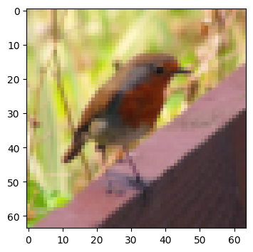
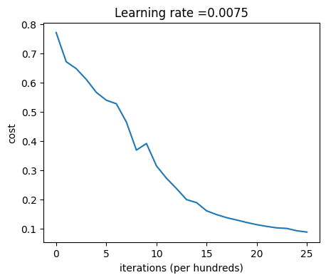
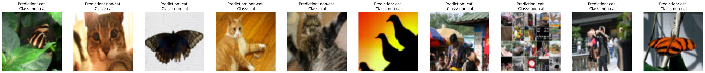

import time
import numpy as np
import h5py
import matplotlib.pyplot as plt
import scipy
from PIL import Image
from scipy import ndimage
%matplotlib inline
plt.rcParams['figure.figsize'] = (5.0, 4.0) # set default size of plots
plt.rcParams['image.interpolation'] = 'nearest'
plt.rcParams['image.cmap'] = 'gray'
np.random.seed(1)Building a Cat Image Classifier using Neural Networks from Scratch
Repo link : https://github.com/SherryS997/cat-image-classification-neural-network-numpy-scipy
Introduction
The following Jupyter Notebook encapsulates the step-by-step creation of a cat image classifier using Neural Networks, entirely coded from scratch using Python libraries like NumPy, SciPy, and Matplotlib. This project aims to distinguish cat images from non-cat images using machine learning techniques implemented through a neural network architecture.
The notebook begins by loading the necessary libraries and datasets containing both training and test images of cats and non-cats. It further explores the dataset’s structure, dimensions, and the process of standardizing image data to be used in the neural network.
The construction of the neural network includes defining activation functions (sigmoid and ReLU), initializing parameters, implementing forward and backward propagation, and updating parameters via gradient descent. The model’s performance is assessed using various functions to compute the cost, make predictions, and visualize mislabeled images.
Additionally, the notebook contains a function to predict images outside the dataset, enabling users to test the model’s classification capabilities on their images.
Library Imports and Environment Setup
This section initializes the notebook by importing essential libraries and configuring the environment. It includes importing standard libraries such as NumPy, SciPy, Matplotlib, and PIL (Python Imaging Library). Additionally, the section sets up the notebook environment by configuring parameters for Matplotlib plots, ensuring consistent visualization settings throughout the notebook. This step is crucial as it prepares the groundwork for subsequent data handling, model building, and result visualization within the notebook.
Data Loading and Exploration
Dataset Loading and Preprocessing
This section of the code focuses on loading the cat image dataset, which includes both training and test sets, from .h5 files. It reads the data and relevant labels, separating them into training features (train_x_orig) and labels (train_y), and test features (test_x_orig) and labels (test_y). Additionally, it retrieves the classes/categories from the dataset.
The data is loaded using the h5py library and converted into NumPy arrays for further processing. Reshaping and organizing the label data ensure compatibility with subsequent operations. This step is crucial as it lays the foundation for subsequent data preprocessing and model development stages.
train_dataset = h5py.File('datasets/train_catvnoncat.h5', "r")
train_x_orig = np.array(train_dataset["train_set_x"][:]) # your train set features
train_y = np.array(train_dataset["train_set_y"][:]) # your train set labels
test_dataset = h5py.File('datasets/test_catvnoncat.h5', "r")
test_x_orig = np.array(test_dataset["test_set_x"][:]) # your test set features
test_y = np.array(test_dataset["test_set_y"][:]) # your test set labels
classes = np.array(test_dataset["list_classes"][:]) # the list of classes
train_y = train_y.reshape((1, train_y.shape[0]))
test_y = test_y.reshape((1, test_y.shape[0]))Visualizing Dataset Samples and Labels
This section presents a visualization of the dataset samples along with their respective labels. Using matplotlib, it displays a specific image from the training set identified by its index. Additionally, the label associated with the image is shown, providing clarity about the class it represents. In this instance, the output displays an example image labeled as a non-cat (y = 0), portraying a picture that corresponds to a hummingbird.
# Example of a picture
index = 10
plt.imshow(train_x_orig[index])
print ("y = " + str(train_y[0,index]) + ". It's a " + classes[train_y[0,index]].decode("utf-8") + " picture.")y = 0. It's a non-cat picture.
Dataset Overview and Structure
This section provides an insight into the dataset statistics, presenting essential information such as the number of training and testing examples, along with details regarding the dimensions and size of each image. It displays the number of training and testing examples, specifying the dimensions and shape of the image arrays. This exploration helps understand the dataset’s structure and prepares for preprocessing and model development.
# Explore your dataset
m_train = train_x_orig.shape[0]
num_px = train_x_orig.shape[1]
m_test = test_x_orig.shape[0]
print ("Number of training examples: " + str(m_train))
print ("Number of testing examples: " + str(m_test))
print ("Each image is of size: (" + str(num_px) + ", " + str(num_px) + ", 3)")
print ("train_x_orig shape: " + str(train_x_orig.shape))
print ("train_y shape: " + str(train_y.shape))
print ("test_x_orig shape: " + str(test_x_orig.shape))
print ("test_y shape: " + str(test_y.shape))Number of training examples: 209
Number of testing examples: 50
Each image is of size: (64, 64, 3)
train_x_orig shape: (209, 64, 64, 3)
train_y shape: (1, 209)
test_x_orig shape: (50, 64, 64, 3)
test_y shape: (1, 50)The output from the code snippet provides crucial insights into the dataset structure and composition:
Number of training examples: The dataset comprises 209 training examples, which serves as the data used for training the classification model.
Number of testing examples: There are 50 testing examples, utilized to evaluate the trained model’s performance on unseen data.
Image size: Each image in the dataset has a dimension of (64, 64, 3), indicating that the images are 64 pixels in height and width with three color channels (RGB).
Train and test set shapes: The training set, denoted by
train_x_orig, consists of 209 images, each with a size of (64, 64, 3). The associated training labels (train_y) have a shape of (1, 209). Similarly, the test set (test_x_orig) comprises 50 images with the same dimensions as the training images, and the corresponding test labels (test_y) possess a shape of (1, 50).
Understanding these dataset statistics is vital for various tasks, such as data preprocessing, designing the neural network architecture, and assessing the model’s performance during training and testing phases.
Data Preprocessing
Data Reshaping and Normalization
This section involves the preprocessing steps applied to the dataset before feeding it into the neural network model. It includes two key operations:
Reshaping: The code snippet reshapes the training and test examples. Using the
reshape()function, the images are flattened to a 1D array while preserving the number of samples. This operation is crucial as it transforms the multi-dimensional image data into a format suitable for further processing.Normalization: Normalization is performed to standardize the pixel values of the images. The pixel values, initially ranging from 0 to 255, are scaled to be between 0 and 1 by dividing each pixel value by 255. Normalizing the data helps in achieving uniformity and stability during training, aiding the neural network to learn effectively without being skewed by varying pixel ranges. The standardized data is denoted as
train_xandtest_x.
These preprocessing steps are essential for preparing the data before training the neural network, ensuring that the model learns effectively and efficiently from the input images.
# Reshape the training and test examples
train_x_flatten = train_x_orig.reshape(train_x_orig.shape[0], -1).T # The "-1" makes reshape flatten the remaining dimensions
test_x_flatten = test_x_orig.reshape(test_x_orig.shape[0], -1).T
# Standardize data to have feature values between 0 and 1.
train_x = train_x_flatten/255.
test_x = test_x_flatten/255.
print ("train_x's shape: " + str(train_x.shape))
print ("test_x's shape: " + str(test_x.shape))train_x's shape: (12288, 209)
test_x's shape: (12288, 50)Neural Network Architecture
Neural Network Architecture Definition
Description: This section defines the architecture of the neural network based on specific constants and parameters. It establishes the structure of the model by setting the dimensions of each layer, including the input layer, hidden layers, and output layer. The constants n_x, n_h, and n_y represent the sizes of the input features, hidden layers, and output respectively. Additionally, the layers_dims list specifies the dimensions of each layer in a 4-layer neural network, providing insight into the overall structure of the model. The learning_rate parameter, crucial for optimization, is also initialized here.
### CONSTANTS DEFINING THE MODEL ####
n_x = num_px * num_px * 3
n_h = 7
n_y = 1
layers_dims = [12288, 20, 7, 5, 1] # 4-layer model
learning_rate = 0.0075Deep Neural Network Parameter Initialization
The function “initialize_parameters_deep” sets up the initial values for the weights (W) and biases (b) of a deep neural network with multiple layers. It takes in an array (layer_dims) containing the dimensions of each layer in the network.
This function initializes the parameters for each layer (W1, b1, …, WL, bL) as a Python dictionary (parameters). For each layer l, it generates random weights (Wl) of shape (layer_dims[l], layer_dims[l-1]) using a Gaussian distribution and scales them by np.sqrt(layer_dims[l-1]). The biases (bl) are initialized as zero vectors of shape (layer_dims[l], 1).
The purpose of this initialization is to provide suitable starting values for the weights and biases, aiding in the convergence of the neural network during training. The appropriate initialization helps prevent issues like vanishing/exploding gradients and contributes to better learning in the subsequent training phases of the network.
def initialize_parameters_deep(layer_dims):
"""
Arguments:
layer_dims -- python array (list) containing the dimensions of each layer in our network
Returns:
parameters -- python dictionary containing your parameters "W1", "b1", ..., "WL", "bL":
Wl -- weight matrix of shape (layer_dims[l], layer_dims[l-1])
bl -- bias vector of shape (layer_dims[l], 1)
"""
np.random.seed(1)
parameters = {}
L = len(layer_dims) # number of layers in the network
for l in range(1, L):
parameters['W' + str(l)] = np.random.randn(layer_dims[l], layer_dims[l-1]) / np.sqrt(layer_dims[l-1]) #*0.01
parameters['b' + str(l)] = np.zeros((layer_dims[l], 1))
assert(parameters['W' + str(l)].shape == (layer_dims[l], layer_dims[l-1]))
assert(parameters['b' + str(l)].shape == (layer_dims[l], 1))
return parametersActivation Functions Implementation (Sigmoid and ReLU)
This section in the code comprises the implementation of two fundamental activation functions used in neural networks: Sigmoid and Rectified Linear Unit (ReLU).
- Sigmoid Activation Function:
- Definition: The sigmoid activation function is implemented to squash the input values between 0 and 1, facilitating non-linear transformations in neural networks.
- Implementation: The sigmoid function takes in any numpy array
Zand computes the outputAusing the formulaA = 1 / (1 + np.exp(-Z)). It returns the computedAand also caches the inputZfor efficient backpropagation during the training process. - Backward Propagation: The
sigmoid_backwardfunction computes the gradient of the cost with respect toZduring backpropagation. It utilizes the cachedZand the incoming gradientdAto computedZ, which is essential for updating weights in the network.
- ReLU (Rectified Linear Unit) Activation Function:
- Definition: ReLU is a widely used activation function that introduces non-linearity by setting all negative values to zero and leaving positive values unchanged.
- Implementation: The
relufunction takes the outputZfrom a linear layer and computes the post-activation outputAusingA = np.maximum(0, Z). It also caches the inputZfor efficient backward pass computation. - Backward Propagation: The
relu_backwardfunction calculates the gradient of the cost with respect toZfor a single ReLU unit. It utilizes the cachedZand incoming gradientdAto computedZ. It ensures that forZ <= 0, the gradientdZis set to zero to handle the non-differentiability atZ = 0.
These activation functions, Sigmoid and ReLU, play pivotal roles in introducing non-linearities within neural networks, aiding in learning complex patterns and enhancing the network’s representational capacity during training.
def sigmoid(Z):
"""
Implements the sigmoid activation in numpy
Arguments:
Z -- numpy array of any shape
Returns:
A -- output of sigmoid(z), same shape as Z
cache -- returns Z as well, useful during backpropagation
"""
A = 1/(1+np.exp(-Z))
cache = Z
return A, cache
def relu(Z):
"""
Implement the RELU function.
Arguments:
Z -- Output of the linear layer, of any shape
Returns:
A -- Post-activation parameter, of the same shape as Z
cache -- a python dictionary containing "A" ; stored for computing the backward pass efficiently
"""
A = np.maximum(0,Z)
assert(A.shape == Z.shape)
cache = Z
return A, cache
def relu_backward(dA, cache):
"""
Implement the backward propagation for a single RELU unit.
Arguments:
dA -- post-activation gradient, of any shape
cache -- 'Z' where we store for computing backward propagation efficiently
Returns:
dZ -- Gradient of the cost with respect to Z
"""
Z = cache
dZ = np.array(dA, copy=True) # just converting dz to a correct object.
# When z <= 0, you should set dz to 0 as well.
dZ[Z <= 0] = 0
assert (dZ.shape == Z.shape)
return dZ
def sigmoid_backward(dA, cache):
"""
Implement the backward propagation for a single SIGMOID unit.
Arguments:
dA -- post-activation gradient, of any shape
cache -- 'Z' where we store for computing backward propagation efficiently
Returns:
dZ -- Gradient of the cost with respect to Z
"""
Z = cache
s = 1/(1+np.exp(-Z))
dZ = dA * s * (1-s)
assert (dZ.shape == Z.shape)
return dZForward Propagation
Forward Propagation Implementation for Neural Network Layers
The code snippet presents the implementation of forward propagation for a neural network’s layers, encompassing both linear transformation and activation functions. The following functions are integral components of this forward propagation process:
linear_forwardFunction:- This function computes the linear part of a layer’s forward propagation.
- It calculates the pre-activation parameter
Zusing the weightsW, activationsAfrom the previous layer, and biasb. - The resulting pre-activation parameter
Zis fundamental for subsequent activation functions. - The calculated values are cached in a dictionary (
cache) containingA,W, andbfor efficient computation during the backward pass.
def linear_forward(A, W, b):
"""
Implement the linear part of a layer's forward propagation.
Arguments:
A -- activations from previous layer (or input data): (size of previous layer, number of examples)
W -- weights matrix: numpy array of shape (size of current layer, size of previous layer)
b -- bias vector, numpy array of shape (size of the current layer, 1)
Returns:
Z -- the input of the activation function, also called pre-activation parameter
cache -- a python dictionary containing "A", "W" and "b" ; stored for computing the backward pass efficiently
"""
Z = W.dot(A) + b
assert(Z.shape == (W.shape[0], A.shape[1]))
cache = (A, W, b)
return Z, cachelinear_activation_forwardFunction:- This function implements the complete forward propagation for the layer, combining the linear transformation and an activation function (
sigmoidorReLU). - Depending on the specified activation function, it computes the post-activation value
Ausing the pre-activationZobtained from thelinear_forwardstep. - The resultant post-activation value
Aalong with the linear and activation function caches (linear_cacheandactivation_cache) are stored in a dictionary (cache). These caches are crucial for efficient computation during the subsequent backward pass.
- This function implements the complete forward propagation for the layer, combining the linear transformation and an activation function (
Both functions work in tandem to compute the forward pass through a layer, incorporating linear transformations and different activation functions based on the specified requirements (sigmoid or ReLU). The caches obtained during this process facilitate the backward propagation for updating the neural network’s parameters during training.
def linear_activation_forward(A_prev, W, b, activation):
"""
Implement the forward propagation for the LINEAR->ACTIVATION layer
Arguments:
A_prev -- activations from previous layer (or input data): (size of previous layer, number of examples)
W -- weights matrix: numpy array of shape (size of current layer, size of previous layer)
b -- bias vector, numpy array of shape (size of the current layer, 1)
activation -- the activation to be used in this layer, stored as a text string: "sigmoid" or "relu"
Returns:
A -- the output of the activation function, also called the post-activation value
cache -- a python dictionary containing "linear_cache" and "activation_cache";
stored for computing the backward pass efficiently
"""
if activation == "sigmoid":
# Inputs: "A_prev, W, b". Outputs: "A, activation_cache".
Z, linear_cache = linear_forward(A_prev, W, b)
A, activation_cache = sigmoid(Z)
elif activation == "relu":
# Inputs: "A_prev, W, b". Outputs: "A, activation_cache".
Z, linear_cache = linear_forward(A_prev, W, b)
A, activation_cache = relu(Z)
assert (A.shape == (W.shape[0], A_prev.shape[1]))
cache = (linear_cache, activation_cache)
return A, cacheForward Propagation in L-layer Neural Networks
The function L_model_forward orchestrates the forward propagation process within an L-layer neural network. It executes a sequence of [LINEAR->RELU]*(L-1)->LINEAR->SIGMOID computations. Here’s how it works:
- Initialization:
- Receives input data
Xand a set of pre-initialized parameters for each layer. - Initializes an empty list
cachesto store the cache values for later use.
- Receives input data
- Layer-wise Computation:
- Iterates through each layer (from 1 to L-1) except the output layer.
- Performs the [LINEAR -> ACTIVATION] step, using ReLU activation for hidden layers.
- Updates the current activation
Aand stores the computed cache for each layer incaches.
- Output Layer Computation:
- Executes a final [LINEAR -> SIGMOID] step for the output layer to get the last post-activation value
AL. - Appends this cache value to the
cacheslist.
- Executes a final [LINEAR -> SIGMOID] step for the output layer to get the last post-activation value
- Validation and Return:
- Asserts the shape of the final post-activation value
AL. - Returns
AL, representing the predicted values or probabilities, andcaches, containing the cached values from each layer’s computation.
- Asserts the shape of the final post-activation value
This function facilitates the sequential execution of the forward propagation steps, ensuring that each layer’s activation values are appropriately computed and stored for subsequent use during backward propagation.
def L_model_forward(X, parameters):
"""
Implement forward propagation for the [LINEAR->RELU]*(L-1)->LINEAR->SIGMOID computation
Arguments:
X -- data, numpy array of shape (input size, number of examples)
parameters -- output of initialize_parameters_deep()
Returns:
AL -- last post-activation value
caches -- list of caches containing:
every cache of linear_relu_forward() (there are L-1 of them, indexed from 0 to L-2)
the cache of linear_sigmoid_forward() (there is one, indexed L-1)
"""
caches = []
A = X
L = len(parameters) // 2 # number of layers in the neural network
# Implement [LINEAR -> RELU]*(L-1). Add "cache" to the "caches" list.
for l in range(1, L):
A_prev = A
A, cache = linear_activation_forward(A_prev, parameters['W' + str(l)], parameters['b' + str(l)], activation = "relu")
caches.append(cache)
# Implement LINEAR -> SIGMOID. Add "cache" to the "caches" list.
AL, cache = linear_activation_forward(A, parameters['W' + str(L)], parameters['b' + str(L)], activation = "sigmoid")
caches.append(cache)
assert(AL.shape == (1,X.shape[1]))
return AL, cachesCost Computation
Cross-Entropy Cost Function Implementation
The function compute_cost(AL, Y) calculates the cross-entropy cost, an essential metric in evaluating the performance of a classification neural network. The implementation follows the cross-entropy formula defined by equation (7). It takes in the predicted probability vector AL and the true label vector Y, both of shape (1, number of examples).
The steps involved in this implementation are:
Initialization: Obtain the number of examples
mfrom the shape ofY.Compute Loss: Calculate the cross-entropy loss by utilizing the formula:
\[ \text{cost} = \frac{1}{m} \times \left( - \sum_{i=1}^{m} \left( Y \cdot \log(AL)^T + (1 - Y) \cdot \log(1 - AL)^T \right) \right) \]
This equation computes the loss by comparing the predicted probability vector
ALagainst the true label vectorY. It sums the logarithmic loss for each example and averages it across all examples.Squeeze and Assert: To ensure the expected shape of the cost, the
np.squeeze()function is applied, which transforms the shape to the expected scalar value. Additionally, an assertion check confirms that the shape of the cost matches the expected shape.Return: The computed cost value is returned to the calling function.
This cost function is crucial in the training process of the neural network, as it quantifies the dissimilarity between the predicted and actual labels, guiding the optimization process towards minimizing this dissimilarity during model training.
def compute_cost(AL, Y):
"""
Implement the cost function defined by equation (7).
Arguments:
AL -- probability vector corresponding to your label predictions, shape (1, number of examples)
Y -- true "label" vector (for example: containing 0 if non-cat, 1 if cat), shape (1, number of examples)
Returns:
cost -- cross-entropy cost
"""
m = Y.shape[1]
# Compute loss from aL and y.
cost = (1./m) * (-np.dot(Y,np.log(AL).T) - np.dot(1-Y, np.log(1-AL).T))
cost = np.squeeze(cost) # To make sure your cost's shape is what we expect (e.g. this turns [[17]] into 17).
assert(cost.shape == ())
return costBackward Propagation
Backward Propagation Derivation and Implementation for Neural Network Layers
This section focuses on the backward propagation process, a crucial step in training neural networks. It encompasses two main functions: linear_backward and linear_activation_backward. These functions form the backbone of the backpropagation algorithm for a single layer and a layer combined with an activation function, respectively.
linear_backwardfunction:- Computes the gradients of the cost function concerning the layer’s parameters (weights and bias) and the activation output of the previous layer.
- Utilizes the chain rule to compute gradients for the current layer’s weights, biases, and the activation output of the previous layer.
- Derives gradients using the computed
dZ(gradient of the cost with respect to the linear output) and the values cached during the forward propagation step.
def linear_backward(dZ, cache):
"""
Implement the linear portion of backward propagation for a single layer (layer l)
Arguments:
dZ -- Gradient of the cost with respect to the linear output (of current layer l)
cache -- tuple of values (A_prev, W, b) coming from the forward propagation in the current layer
Returns:
dA_prev -- Gradient of the cost with respect to the activation (of the previous layer l-1), same shape as A_prev
dW -- Gradient of the cost with respect to W (current layer l), same shape as W
db -- Gradient of the cost with respect to b (current layer l), same shape as b
"""
A_prev, W, b = cache
m = A_prev.shape[1]
dW = 1./m * np.dot(dZ,A_prev.T)
db = 1./m * np.sum(dZ, axis = 1, keepdims = True)
dA_prev = np.dot(W.T,dZ)
assert (dA_prev.shape == A_prev.shape)
assert (dW.shape == W.shape)
assert (db.shape == b.shape)
return dA_prev, dW, dblinear_activation_backwardfunction:- Implements the backward propagation for the combination of linear and activation layers.
- Allows for flexibility in choosing different activation functions (sigmoid or ReLU) while performing backward propagation.
- Combines the gradients calculated by the
linear_backwardfunction with the gradients derived from the activation function’s backward pass.
These functions collectively enable the computation of gradients at each layer of the neural network during backpropagation. Understanding this section is pivotal for comprehending how the model learns from its mistakes and adjusts its parameters to minimize the cost function.
def linear_activation_backward(dA, cache, activation):
"""
Implement the backward propagation for the LINEAR->ACTIVATION layer.
Arguments:
dA -- post-activation gradient for current layer l
cache -- tuple of values (linear_cache, activation_cache) we store for computing backward propagation efficiently
activation -- the activation to be used in this layer, stored as a text string: "sigmoid" or "relu"
Returns:
dA_prev -- Gradient of the cost with respect to the activation (of the previous layer l-1), same shape as A_prev
dW -- Gradient of the cost with respect to W (current layer l), same shape as W
db -- Gradient of the cost with respect to b (current layer l), same shape as b
"""
linear_cache, activation_cache = cache
if activation == "relu":
dZ = relu_backward(dA, activation_cache)
dA_prev, dW, db = linear_backward(dZ, linear_cache)
elif activation == "sigmoid":
dZ = sigmoid_backward(dA, activation_cache)
dA_prev, dW, db = linear_backward(dZ, linear_cache)
return dA_prev, dW, dbGradient Descent and Parameter Updates
The code provided contains functions crucial for implementing the backpropagation algorithm in a neural network model. Specifically, it focuses on calculating gradients for parameters and updating these parameters using the gradient descent optimization technique.
- L_model_backward() Function:
- This function executes the backward propagation for a neural network, specifically designed for the architecture of [LINEAR -> RELU] * (L-1) -> LINEAR -> SIGMOID. It takes in the final output probability vector (AL), the true label vector (Y), and a list of caches generated during the forward propagation.
- Initializes backpropagation by computing the derivative of the cost function with respect to the final output layer (dAL).
- Then iterates through the layers in reverse order, applying the appropriate backward activations (sigmoid or ReLU) to calculate gradients for the parameters (dW and db) and activation of the previous layer (dA).
- Finally, returns a dictionary containing the computed gradients.
- update_parameters() Function:
- This function implements the parameter update step using gradient descent.
- It takes the current set of parameters, the gradients calculated from the backward propagation, and the learning rate as inputs.
- Using a loop through the layers, it updates the weights (W) and biases (b) by subtracting the product of the learning rate and the corresponding gradients.
- Returns the updated parameters for the neural network.
These functions collectively form the core of the training process in a neural network. They compute the gradients of the cost function with respect to the parameters, enabling iterative updates through gradient descent to optimize the network’s parameters for improved performance during training.
def L_model_backward(AL, Y, caches):
"""
Implement the backward propagation for the [LINEAR->RELU] * (L-1) -> LINEAR -> SIGMOID group
Arguments:
AL -- probability vector, output of the forward propagation (L_model_forward())
Y -- true "label" vector (containing 0 if non-cat, 1 if cat)
caches -- list of caches containing:
every cache of linear_activation_forward() with "relu" (there are (L-1) or them, indexes from 0 to L-2)
the cache of linear_activation_forward() with "sigmoid" (there is one, index L-1)
Returns:
grads -- A dictionary with the gradients
grads["dA" + str(l)] = ...
grads["dW" + str(l)] = ...
grads["db" + str(l)] = ...
"""
grads = {}
L = len(caches) # the number of layers
m = AL.shape[1]
Y = Y.reshape(AL.shape) # after this line, Y is the same shape as AL
# Initializing the backpropagation
dAL = - (np.divide(Y, AL) - np.divide(1 - Y, 1 - AL))
# Lth layer (SIGMOID -> LINEAR) gradients. Inputs: "AL, Y, caches". Outputs: "grads["dAL"], grads["dWL"], grads["dbL"]
current_cache = caches[L-1]
grads["dA" + str(L-1)], grads["dW" + str(L)], grads["db" + str(L)] = linear_activation_backward(dAL, current_cache, activation = "sigmoid")
for l in reversed(range(L-1)):
# lth layer: (RELU -> LINEAR) gradients.
current_cache = caches[l]
dA_prev_temp, dW_temp, db_temp = linear_activation_backward(grads["dA" + str(l + 1)], current_cache, activation = "relu")
grads["dA" + str(l)] = dA_prev_temp
grads["dW" + str(l + 1)] = dW_temp
grads["db" + str(l + 1)] = db_temp
return grads
def update_parameters(parameters, grads, learning_rate):
"""
Update parameters using gradient descent
Arguments:
parameters -- python dictionary containing your parameters
grads -- python dictionary containing your gradients, output of L_model_backward
Returns:
parameters -- python dictionary containing your updated parameters
parameters["W" + str(l)] = ...
parameters["b" + str(l)] = ...
"""
L = len(parameters) // 2 # number of layers in the neural network
# Update rule for each parameter. Use a for loop.
for l in range(L):
parameters["W" + str(l+1)] = parameters["W" + str(l+1)] - learning_rate * grads["dW" + str(l+1)]
parameters["b" + str(l+1)] = parameters["b" + str(l+1)] - learning_rate * grads["db" + str(l+1)]
return parametersModel Training
Training of Deep Neural Network Models
The function L_layer_model implements the training process for both two-layer and L-layer neural network models. It employs a deep neural network architecture of the form: [LINEAR -> RELU]*(L-1) -> LINEAR -> SIGMOID, allowing flexibility in defining the number of layers and their respective sizes.
Key Components:
Initialization: The function initializes the parameters of the neural network using a deep initialization method via
initialize_parameters_deep.Iterations (Gradient Descent): It performs a specified number of iterations (controlled by
num_iterations) to optimize the parameters. During each iteration:- Forward Propagation: The forward pass computes the activations (AL) and caches through the neural network layers using
L_model_forward. - Cost Computation: The cost function is computed to evaluate the performance of the network through
compute_cost. - Backward Propagation: The gradients are calculated using backpropagation via
L_model_backward. - Parameter Update: The parameters are updated using the calculated gradients and a specified learning rate through
update_parameters.
- Forward Propagation: The forward pass computes the activations (AL) and caches through the neural network layers using
Cost Tracking: It maintains a record of the cost after every 100 iterations (or the final iteration if specified) and appends it to the
costslist.Print Cost (Optional): The parameter
print_costenables the display of the cost value at specified intervals (every 100 iterations) for tracking the convergence of the model during training.
Returns:
The function returns the optimized parameters learned during training (parameters) and a list of costs (costs) tracked over the iterations, which can be useful for visualizing the learning curve and assessing convergence.
Usage:
This function is versatile, allowing the training of deep neural networks by defining the number of layers (layers_dims), input data (X), true labels (Y), learning rate (learning_rate), and the number of optimization iterations (num_iterations). The print_cost flag controls whether the cost is printed during training iterations, providing flexibility for monitoring training progress.
def L_layer_model(X, Y, layers_dims, learning_rate=0.0075, num_iterations=3000, print_cost=False):
"""
Implements a L-layer neural network: [LINEAR->RELU]*(L-1)->LINEAR->SIGMOID.
Arguments:
X -- data, numpy array of shape (num_px * num_px * 3, number of examples)
Y -- true "label" vector (containing 0 if cat, 1 if non-cat), of shape (1, number of examples)
layers_dims -- list containing the input size and each layer size, of length (number of layers + 1).
learning_rate -- learning rate of the gradient descent update rule
num_iterations -- number of iterations of the optimization loop
print_cost -- if True, it prints the cost every 100 steps
Returns:
parameters -- parameters learnt by the model. They can then be used to predict.
"""
np.random.seed(1)
costs = [] # keep track of cost
# Parameters initialization
parameters = initialize_parameters_deep(layers_dims)
# Loop (gradient descent)
for i in range(num_iterations):
# Forward propagation: [LINEAR -> RELU]*(L-1) -> LINEAR -> SIGMOID
AL, caches = L_model_forward(X, parameters)
# Compute cost
cost = compute_cost(AL, Y)
# Backward propagation
grads = L_model_backward(AL, Y, caches)
# Update parameters
parameters = update_parameters(parameters, grads, learning_rate)
# Print the cost every 100 iterations
if print_cost and (i % 100 == 0 or i == num_iterations - 1):
print("Cost after iteration {}: {}".format(i, np.squeeze(cost)))
if i % 100 == 0 or i == num_iterations - 1:
costs.append(cost)
return parameters, costsGradient Descent and Parameter Updates
This section involves the iterative process of optimizing the neural network through gradient descent and updating the model parameters. The L_layer_model function, called with specified parameters like num_iterations = 2500 and print_cost = True, encapsulates the core of this process.
Gradient Descent Iterations: The function initiates a loop for a specified number of iterations (
num_iterations = 2500) where the model undergoes forward and backward propagation to compute the gradients and update the parameters.Cost Evaluation: During each iteration, the cost (or loss) is computed and printed if
print_costis set toTrue. This allows monitoring the model’s learning progress over the iterations.Parameter Updates: Through backpropagation, gradients are computed for each layer, and the parameters (weights and biases) are updated using a learning rate and the calculated gradients to minimize the cost function.
This section represents the heart of training the neural network, where the model learns from the training data by adjusting its parameters iteratively to minimize the cost, eventually improving its predictive capability.
parameters, costs = L_layer_model(train_x, train_y, layers_dims, num_iterations = 2500, print_cost = True)Cost after iteration 0: 0.7717493284237686
Cost after iteration 100: 0.6720534400822914
Cost after iteration 200: 0.6482632048575212
Cost after iteration 300: 0.6115068816101354
Cost after iteration 400: 0.5670473268366111
Cost after iteration 500: 0.5401376634547801
Cost after iteration 600: 0.5279299569455267
Cost after iteration 700: 0.4654773771766851
Cost after iteration 800: 0.36912585249592794
Cost after iteration 900: 0.39174697434805344
Cost after iteration 1000: 0.3151869888600617
Cost after iteration 1100: 0.2726998441789385
Cost after iteration 1200: 0.23741853400268134
Cost after iteration 1300: 0.19960120532208644
Cost after iteration 1400: 0.18926300388463305
Cost after iteration 1500: 0.16118854665827748
Cost after iteration 1600: 0.14821389662363316
Cost after iteration 1700: 0.13777487812972944
Cost after iteration 1800: 0.12974017549190123
Cost after iteration 1900: 0.12122535068005211
Cost after iteration 2000: 0.11382060668633713
Cost after iteration 2100: 0.10783928526254132
Cost after iteration 2200: 0.10285466069352679
Cost after iteration 2300: 0.10089745445261787
Cost after iteration 2400: 0.09287821526472397
Cost after iteration 2499: 0.088439943441702Observations:
- Cost Decrease: The cost reduces progressively as the number of iterations increases. This reduction indicates that the model is learning and optimizing its parameters to better fit the training data.
- Convergence: Initially, the cost starts relatively high at
0.7717and consistently decreases with each iteration. As the iterations progress, the rate of reduction in the cost diminishes, implying that the model is converging towards an optimal solution. - Stabilization: After around
2000iterations, the cost reduction slows down considerably, with smaller decreases in subsequent iterations. This signifies that the model’s improvement becomes marginal, indicating it is approaching convergence or an optimal solution.
Overall, the output demonstrates the iterative nature of the training process, showing how the neural network learns and adjusts its parameters to minimize the cost function, thereby enhancing its predictive capability on the training data.
Model Evaluation
Model Performance Evaluation and Accuracy Assessment
This section evaluates the performance of the trained L-layer neural network model by assessing its prediction accuracy on both the training and test datasets. The function predict() is utilized to make predictions on the provided datasets (train_x and test_x) using the trained model parameters.
The function performs the following steps: - Takes the dataset examples (X) and corresponding labels (y) as inputs along with the trained model parameters. - Utilizes forward propagation through the neural network to obtain predictions (p) for the given dataset X. - Converts the raw probabilities (probas) into binary predictions (0 or 1) based on a threshold of 0.5. - Calculates and displays the accuracy of the predictions by comparing them with the true labels (y).
def predict(X, y, parameters):
"""
This function is used to predict the results of a L-layer neural network.
Arguments:
X -- data set of examples you would like to label
parameters -- parameters of the trained model
Returns:
p -- predictions for the given dataset X
"""
m = X.shape[1]
n = len(parameters) // 2 # number of layers in the neural network
p = np.zeros((1,m))
# Forward propagation
probas, caches = L_model_forward(X, parameters)
# convert probas to 0/1 predictions
for i in range(0, probas.shape[1]):
if probas[0,i] > 0.5:
p[0,i] = 1
else:
p[0,i] = 0
print("Accuracy: " + str(np.sum((p == y)/m)))
return ppred_train = predict(train_x, train_y, parameters)Accuracy: 0.9856459330143539pred_test = predict(test_x, test_y, parameters)Accuracy: 0.8The reported accuracy for the training dataset is approximately 98.56%, while the accuracy for the test dataset stands at 80.0%. Assessing the accuracy on both datasets provides insights into the model’s performance on seen and unseen data, indicating its capability to generalize beyond the training set.
Results Visualization
Cost Evolution During Training Iterations
The visualization depicts the evolution of the cost or loss function over training iterations. It is generated using the plot_costs function, which takes in the costs array as input. The y-axis represents the cost value, while the x-axis shows the iterations in multiples of hundreds.
The plot demonstrates the decreasing trend of the cost function with increasing iterations, indicating the model’s learning progress. It’s evident from the displayed cost values after each iteration that the cost gradually decreases. Initially, the cost is relatively high, reflecting the model’s higher error rate, but it decreases consistently over training epochs. As the iterations progress, the cost approaches a lower value, signifying the model’s improvement in minimizing errors and getting closer to optimal parameters.
The plotted curve illustrates how the cost decreases over time, providing insight into the model’s learning behavior and convergence towards better performance.
def plot_costs(costs, learning_rate=0.0075):
plt.plot(np.squeeze(costs))
plt.ylabel('cost')
plt.xlabel('iterations (per hundreds)')
plt.title("Learning rate =" + str(learning_rate))
plt.show()
plot_costs(costs, learning_rate)
Visualizing Misclassified Images
This section utilizes a function named print_mislabeled_images() to visually represent misclassified images. The function takes parameters including the class labels, dataset (X), true labels (y), and predicted labels (p). It aims to plot and display images where the predictions made by the model differ from the true labels.
The code identifies and extracts misclassified indices, highlighting cases where the sum of predicted and true labels is equal to 1. It then generates visualizations for these misclassified images by iterating through the identified indices. The plot showcases the image, its predicted class label, and the actual class label.
In this specific instance, the function displays 10 misclassified images, enabling an insightful view into instances where the model’s predictions did not align with the ground truth labels. The visualization aids in understanding the nature of misclassifications and potentially identifying patterns or challenges within the model’s performance.
def print_mislabeled_images(classes, X, y, p):
"""
Plots images where predictions and truth were different.
X -- dataset
y -- true labels
p -- predictions
"""
a = p + y
mislabeled_indices = np.asarray(np.where(a == 1))
plt.rcParams['figure.figsize'] = (40.0, 40.0) # set default size of plots
num_images = len(mislabeled_indices[0])
for i in range(num_images):
index = mislabeled_indices[1][i]
plt.subplot(2, num_images, i + 1)
plt.imshow(X[:,index].reshape(64,64,3), interpolation='nearest')
plt.axis('off')
plt.title("Prediction: " + classes[int(p[0,index])].decode("utf-8") + " \n Class: " + classes[y[0,index]].decode("utf-8"))
print_mislabeled_images(classes, test_x, test_y, pred_test)
Conclusion: Assessing the Cat Image Classification Neural Network
The development of the cat image classification neural network showcases the application of deep learning techniques for image recognition tasks. Throughout this project, several key aspects have been addressed:
Model Architecture and Training: The notebook implemented an L-layer neural network from scratch using numpy and scipy. The architecture included linear and activation functions (ReLU and sigmoid) and underwent iterative training to optimize parameters for better accuracy.
Performance Evaluation: The trained models were evaluated on both the training and test sets. The assessment included metrics like accuracy, cost, and visual representation of incorrectly classified images. These evaluations provided insights into the model’s ability to distinguish cat images from non-cat images.
Key Findings: The models exhibited varying levels of performance. The L-layer network demonstrated improved accuracy and better representation of features.
Challenges and Future Directions: Despite the successful implementation, challenges like overfitting, optimization convergence, and computational intensity were encountered. To further enhance the model’s performance, regularization techniques, hyperparameter tuning, and exploring more complex architectures could be considered.
Application and Relevance: The cat image classification neural network exemplifies the practical application of machine learning in real-world scenarios, specifically in image recognition tasks. The skills acquired and lessons learned from this project lay a solid foundation for tackling more complex image classification problems.
Final Thoughts: Building a neural network from scratch not only provided a deep understanding of its inner workings but also emphasized the significance of data preprocessing, model architecture, and iterative optimization in achieving robust and accurate predictions.
In essence, this project not only successfully classified cat images but also served as a stepping stone towards understanding and refining neural networks for diverse image recognition applications.